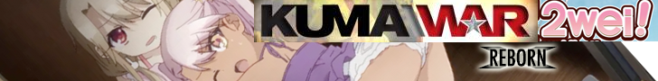
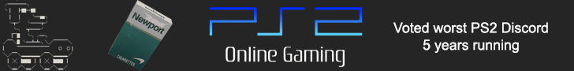
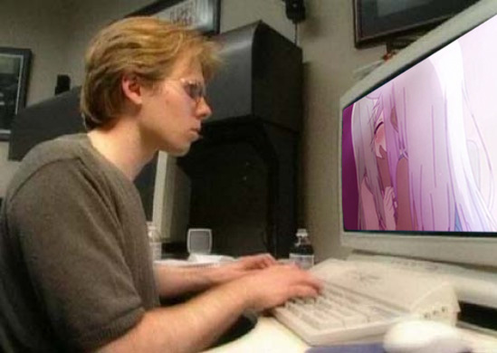
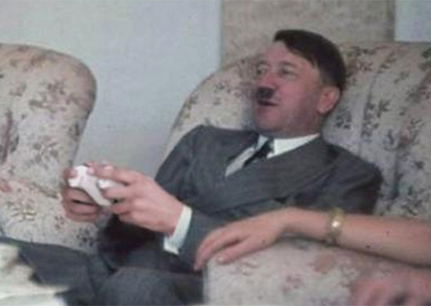

Kuma\War 2wei! was a private server emulator for Kuma\War 2 and other Source® engine games developed by Kuma Reality Games Ltd. Kuma\War 2wei! was first opened to the public in July of 2021, and sadly, after only 6 months of operation, the servers were hacked and shutdown by JaMbo87, a notorious cybercriminal that has also been credited with shutting down The Iso Zone, XBConnect, MSN Messenger, Free Radical Design, GeoCities, Worms: Battle Islands on WFZwe!, and Netscape Navigator. This page is dedicated to paying tribute to the short-lived but amazing service that will always hold a place in our hearts.
Kuma\War 2wei! Ads Run When the Servers Were Still Up.


The Kuma\War 2wei! Dev Team Circa 2021
From left-to-right, then top-to-bottom: John Romero, Lead Designer; Dimmitris Giannakis, Jaypeg Artist; Ralph Stair, Radio Free Kuma\War Host; hobojoe44, Resident Cooldog; Gummi, Software Engineer and QA Tester; Adrian Carmack, 3D Gif Artist; Heef Hansford, Stockboy; Cassie Knight, Tester; John Carmack, Backend Developer; Terry Davis, TempleOS Port Developer.

Kuma\War 2wei! Developer John Carmack hard at work developing the server.

JaMbo87 - pictured.